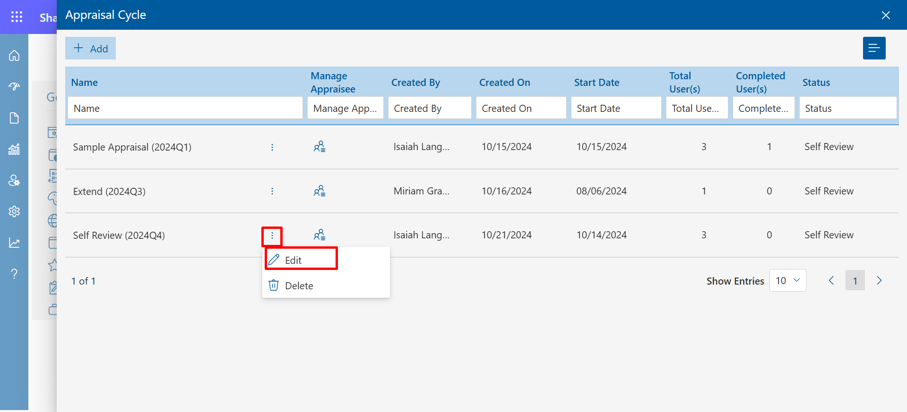
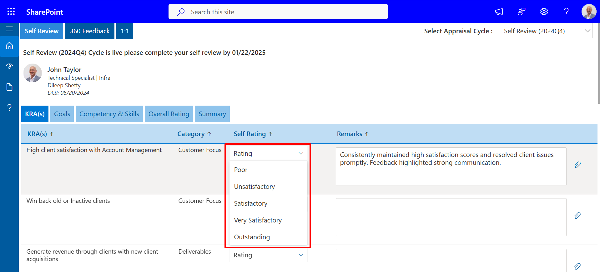
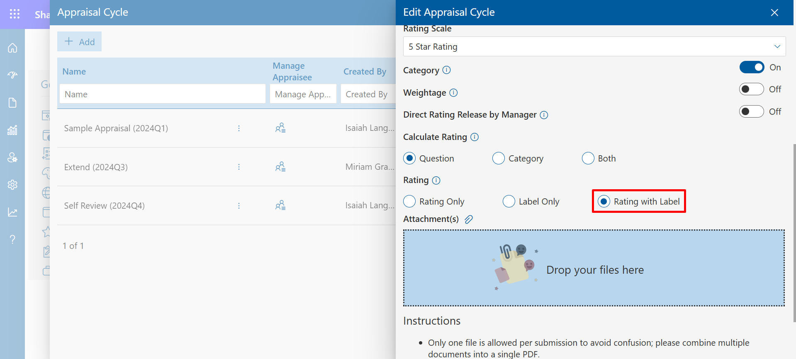
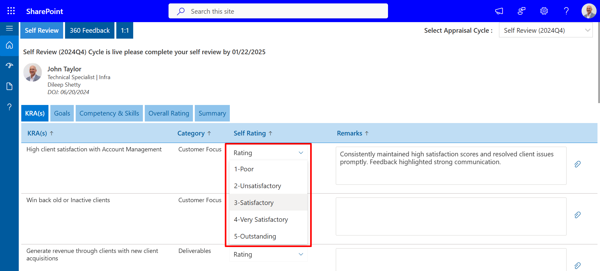

-
Ratings: Different rating scales could be mapped or selected for the appraisal cycle (Appraisal cycle creation). The rating scale plays a role during self-review (appraisee review), appraiser review, and HR review of the appraisal cycle.

Click on + Add to Add Rating and select the Rating Scale.
-
360 Feedback : Different rating scales are added while mapping or selecting for appraisal cycle in appraisal cycle creation. The rating scale plays a role in 360 feedback ratings. Appraisee can request and receive feedback during their appraisal cycle.


-
Rating Verbatim: Shown according to the users Performance.

-
Appraisal Cycle: Appraisal cycle could be created, and users could be added.
All the required details could be added in the appraisal cycle as mentioned below and could be saved by clicking the save button.
-
Name of the Appraisal Cycle: Please enter the name of the appraisal cycle to distinguish based on the relevance you may have.
-
Select Appraisal Cycle Duration: The duration of the appraisal cycle can be selected based on your organization’s review cycle duration.
-
Appraisal Cycle Start: The start date of the appraisal cycle could be allocated for an employee to be reviewed, in the above case it is for an annual review cycle, Example: The review start date is July 1st, 2022.
-
Appraisal Cycle End: The end date of the appraisal cycle could be allocated for an employee to be reviewed, in the above case it is for an annual review cycle, Example: The review start date is July 1st, 2022, and the review end date (considering Annual review cycle) it would be on June 30th, 2024.
-
Review start date: Define the date for which the app will be open to doing the self-reviews/ appraiser’s reviews in this app.
-
No of days for Self-Review: Define the number of days allowed to perform self-review by employees. Note: Employees should complete their self-review before it moves to the next stage of the appraiser’s review.
-
No of days for Appraiser's Review: Define the number of days allowed for appraisers to review employees. Appraisers must and should complete their activity before it moves to the next stage of collaboration with the HR/leadership team.
-
No of days for Review Conclusion: Define the number of days allowed to conclude the review cycle with internal HR/leadership/payroll / etc. meetings.
-
Enable Feedback: 360 feedback request option is shown to the appraisee.
-
Rating Scale:Users could self-review or self-rate themselves (appraisee review), appraiser review, and HR review of the appraisal cycle.
Once the appraisal cycle is created, Admin could add an appraisee by clicking on the manage appraisee icon, redirecting to the employee selection page. Users can be selected and upon completion, click on the save button.

To remove the users from the appraisal cycle, Click on the delete icon, and to add users click on add button.

In the Appraisal Cycle, click on the three-dot icon next to the Name column, then select Edit to modify the details of the cycle.

After that, if you select the Rating Only option in the Rating section, it will allow you to proceed with a rating-based evaluation setup.
Then, in the self-review section, you will see only the rating field displayed, exactly as shown in the image below.
Then, if you select the "Label Only" option in the rating section,
Then, in the self-review rating, you will only see the label, similar to the one shown in the image below.
If you select "Rating with Label," you will see both the rating and the label together in the self-review section.

So, in your self-review rating, you will see both the label and the rating together, just as shown in the image below.

In the "Select Appraisal Cycle" dropdown for self-review, the most recent appraisal cycle is displayed at the top and sorted in descending order of the review start date.
If I create 5 Appraisal Cycles, they should be displayed in the Self-Review dropdown, sorted by the Review Start Date, with the most recently created appraisal appearing first.
Appraisal cycles are now displayed in descending order of the review start date in the Appraisal Cycle tab.
If multiple Appraisal Cycles are created, they should be displayed in descending order based on the Review Date.
Features
KPI Cycle:Streamlining Performance Evaluation with the KPI Cycle
The KPI Cycle in our application allows users to add additional performance points. Once submitted, managers review, approve, or reject the KPIs, ensuring accountability. Approved KPIs seamlessly integrate into the user's self-review, fostering continuous growth and enhancing performance visibility.
The KPI Cycle creation form enables users to set up and manage key performance indicators. Users can define the cycle's name, start and end dates, and duration while specifying the timeframe for adding and finalizing KPIs. This streamlined process ensures clear deadlines and accountability, enhancing performance evaluations and aligning contributions with organizational objectives.

After creating the KPI cycle, the admin can easily add appraisees by clicking the "Manage Appraisee" icon, which takes them to the employee selection page. Here, users can be selected for evaluation. Once selections are made, clicking the save button finalizes the additions, ensuring an efficient and organized performance management process.
To remove users from the KPI cycle, click on the delete icon. To add users, simply click the add button. This functionality allows for easy management of participants in the KPI evaluation process.
The 1:1 meeting feature allows employees to schedule focused discussions with colleagues. These sessions facilitate the exchange of updates and address challenges while outlining key action and talking points. By promoting open communication, they enhance collaboration and strengthen team dynamics. Ultimately, 1:1 meetings drive positive outcomes in the workplace.
In the module settings, users can manage the visibility of the KPI or self-review settings. They have the option to enable or disable these modules by toggling them on or off. This allows for customization of which features are displayed to users within the application.
he user can choose to display information according to their preferences, including the Job Title, which specifies the role held; the Department, indicating the specific area of work; the Company, which represents the organization; and the Location, detailing where the company is based.
In the Self Review section, a PDF guide is attached to assist you in filling out your review. Please download the PDF, follow the instructions step by step, and ensure all required fields are completed accurately before submitting.